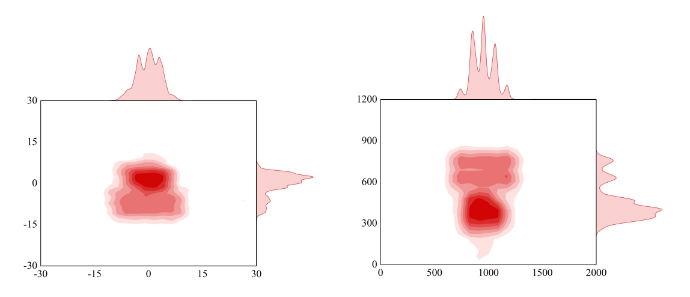

Stimuli and Experiment
We used the 48-question from Raven Progressive Matrices (RPM) as the subject's visual stimuli. In addition, to ensure subjects are not distracted as much as possible during the task time, we set answer time for questions(15s) shorter than the average time to work out the questions. The procedure of the experiment is shown in Fig.1

Fig. 1. The procedure of experiment
Before each subject starts the investigation, first, the eye tracker is calibrated the gaze of the current subject to reduce the gaze error of the collection process. Then ten landscape pictures help the subject calm down and enter the test state. After that, it begins the test, which includes 48 questions. We set each question to have a maximum answering time of 15 seconds. The subject must press the button corresponding to the answer option preset by the program within the answering time to complete the question and automatically jump to the next question. If the subject does not meet the answer within the set time, it will automatically jump to the next question. Before jumping to the next question, a calibration break is set to ensure high-quality gaze data. It is a fixation point that appeared in the center of the screen for 0.5 seconds, and subjects were asked to focus on this fixation point as much as possible. During the answering process, the program simultaneously records the facial video, screen video, and eye movement data of each subject during completing the 48 reasoning questions.
Fig. 2. Experiment setting
The experiment setting is shown in Fig. 2, and the visual stimuli materials are displayed on a 27-Inch monitor. The subjects’ videos are captured from a commercial webcam fixed on the top of the screen. Logitech C270 HD Webcam is chosen, since it is one of low-cost and most widely used webcam, supporting 1280 × 720 video recording with lightcorrection technology.Dataset Summary
We collected gaze data from a total of 34 subjects(18 female and 16 male), with 22 wearing glasses and 12 having normal vision. Three subjects' gaze data were screened out due to improper experimental operation. The data were collected under well-lit indoor conditions, where the sampling rate of face video was 30Hz, and the sampling rate of Tobii Pro Nano eye tracker was 60Hz. The time for each subject to complete RMP test is about 8-11 minutes. The entire dataset contains 31 subjects' facial videos with a total length of 309 minutes. There are 556,476 images in total, some face image examples are shown in Fig.3.
Fig. 3. Face image from the dataset
Fig. 4. Gaze angle and gaze point distribution
The angle range of the horizontal direction is (-10°, +10°), and the angle of the vertical direction is (-12°, 12°), which is smaller than another gaze dataset. It also means that RavenGaze places higher demands on the recognition algorithms.